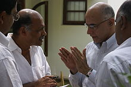

Gopinath was born in Gorur (a remote village in Karnataka's Hassan district)
on November 13, 1951.He was the second of eight children. Gopinath's father; a
school teacher, believed that schools were systems of regimentation and was
resolved to teach Gopinath at home.
However, Gopinath was admitted to a Kannada
medium school quite late and straight away he joined Standard V. In 1962,
Gopinath cleared the admission test and joined Sainik School, Bijapur. The
sainik school helped and prepared Gopinath to clear the NDA entrance exams.
After 3 years of rigorous training, Gopinath completed education from the NDA.
He then went on to graduate from the IMA.
After school, he earned a commission in the Indian Army, earning the rank of
Captain. He spent eight years in the army and fought in the 1971 Bangladesh
Liberation War.
The army life seemed to somehow tie him down. He took early retirement from
Indian Army, at the age of 28. Upon retirement from the armed forces, he
established an ecologically sustainable sericulture farm; his innovative methods
earned him the Rolex Laureate Award in 1996. Next, he started the Malnad Mobikes
(Enfield dealership) and opened a hotel in Hasan
In 1997 he co-founded Deccan Aviation, a charter helicopter service. In 2003
Gopinath founded Air Deccan, a low cost airline; Air Deccan merged with
Kingfisher Airlines in 2007.
In 2009 he founded Deccan 360, a freight flight
business. In July 2013, Deccan 360 was ordered to wind up by the Karnataka High
Court order based on petitions filed by Dubai-based United Aviation Services
(UAS) and another by M/s Patel Integrated Logistics (PIL) Pvt. Ltd. — seeking
recovery of amounts due to them by winding up the company.
In May 2006 he was knighted with “Chevalier de la Legion d’Honneur” the highest
civilian award conferred by the French Government. He has received many awards
for Air Deccan.
In 2009 Gopinath unsuccessfully contested as an independent candidate in the Lok
Sabha elections
In 2014, He unsuccessfully contested Lok Sabha elections on the ticket of Aam
Aadmi Party
In 1995, the Indian government started a regulatory reforms process to encourage
entrepreneurship. In the next year Gopinath started a private sector commercial
helicopter service, Deccan Aviation.
The Company is now one of the largest
private air charter company in India and Sri Lanka. In 2003 he launched India's
first low-cost airline, Air Deccan; at the time of its 2007 purchase by
Kingfisher Airlines, Air Deccan connected sixty nine cities around India.
Today Gopinath is focusing on Deccan Charters and has forayed into the Cargo and
Express Logistics business.
Deccan Express Logistics will be the first Indian company to create a hub and
spoke distribution model in the express package industry in India. It will
connect not only the major metropolitan areas but also the Tier-I and Tier-II
cities to India’s trade network.
Renamed as Deccan Cargo and Express Logistics
Pvt. Ltd.(DCEL) in 2007-2008, has been ordered to wind up by the Karnataka High
Court in a recent order based on petitions — one filed by Dubai-based United
Aviation Services (UAS) and another by M/s Patel Integrated Logistics (PIL) Pvt.
Ltd. — seeking recovery of amounts due to them by winding up the company..